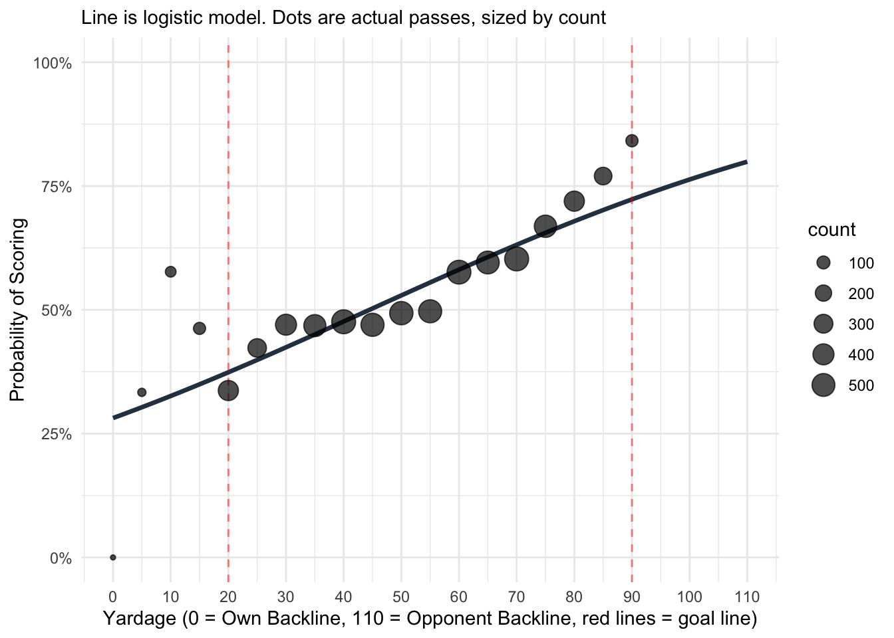

| Table 1: EP Logistic Regression Model | ||
| Characteristic | OR1 | SE |
|---|---|---|
| Pass start y-distance (yd) | 1.02*** | 0.001 |
| 1 p<0.05; p<0.01; p<0.001 | ||
| Abbreviations: CI = Confidence Interval, OR = Odds Ratio, SE = Standard Error | ||
Building EPA: Starting with Expected Points
R
Quarto
Analysis
Introducing the concept of expected points and building some models.
Ultimate Frisbee statistics have advanced significantly beyond purely scores, assists, and turnovers. Most prominently, Ultiworld’s EDGE statistic adds more relevant in game context to the standard scores, assists, and turnovers by incorporating that game’s number of turnovers and total yards thrown. In other words, we should rate a player higher when they throw 3 turnovers in a game of 25 total turnovers versus a game of 15 total turnovers. While a big improvement, there still is a lot more in game context that we can add. In this project I will be creating a new statistic based on a logistic regression model called Expected Points Added (EPA). This football inspired statistic should have strong intuitive appeal: If I catch the pull around my own endzone, there’s a certain probability that we’ll score that possession, say 60%. Conveniently, in Ultimate there’s only one way to score and each score is worth exactly one point so we can translate that percentage into an Expected Point (EP) value of 0.6. Now let’s say I throw a 30 yard huck placing us much closer to the scoring endzone. At this point of the field there’s say a 75% chance of score, or an EP of 0.75. We can then quantify my throw as having an Expected Point Added value of 0.75-0.6 = 0.15.
The intuition remains the same for turnovers. Consider two examples. One, if I throw a turnover on that huck, then maybe the probability of us scoring that point is now 30%, leading to an EPA of 0.3-0.6=-0.3. Two, if I had instead turned it over on a reset throw, it’s now much easier for the other team to score so the chance of us getting it back and scoring is much lower at 5%. So an EPA of 0.05-0.6=-0.55.
In this post I’ll go over the first step of this process by creating the EP model. That is, given where the disc is on the field and the in-game situation, what’s the probability of scoring on that possession?
The data
Data comes from RAMP (a regionals level mixed club team) games from 2022-2024 recorded with the Statto app. Information on player role (cutter, handler, or hybrid is manually entered). There was a fair amount of processing of the data that needed to be done. I’m planning to create an easy to use version of this where anyone can plug in their own Statto generated files and get similar results.
Why logistic regression?
I explored a number of other different options but decided on logistic regression for a number of reasons. One, the outcome we’re interested in, score or not, is a binary variable. Two, we’re interested in the probability of said event which is easy to calculate from a logistic regression. Three, it’s more intuitive to grasp than a non-parametric model (I did try different non-parametric models like random forests but found them to about the same level of accuracy with a big loss in explainability). Four, while I’ll ultimately use a more complicated multiple logistic regression model that doesn’t really lend itself to visualization, the more simple models I’ll start off with do which hopefully will help start developing the intuition.
The Starting Point: Vertical Field Position
Conventional wisdom is that the most important variable in determining the likelihood of scoring on any given possession is vertical field position. That is, the closer a team is to the scoring endzone the higher likelihood of scoring. From that, I built a basic single logistic regression with field position as the sole independent variable.
\[ \operatorname{logit}(P(\text{Scored})) = \beta_0 + \beta_1(\text{pass.start.y.yards}) \]
The key takeaway from here is that every additional yard closer to the endzone a pass starts increases the odds of a score that possession by 2%. Or put another way, every 10 yards closer to the endzone results in the odds of scoring increasing by about 20%. This value is both large and statistically significant which fits with our initial intuitions about field location and prior research.
We can see visualize this result by plotting different field positions vs the probability of scoring in each of those points here. I’ve included the actual passes as the circles as well in order to get a sense of what the actual data are and where the model comes from. Also note the paucity of passes at the extremes (i.e. closest to 0 yards and 90 yards) which we will see later leads to a more poorly calibrated model at those extreme points.

At this point it would be helpful to have a metric to ‘grade’ our EP model by so that as we add complexity we can see if we’re improving it. In an ideal world I’d create the model using all my existing games, then play a new game and see if that model is able to accurately predict what happens. While this counterfactual doesn’t exist, I can do the next best thing by using leave-one-game-out cross-validation (LOGO CV). This takes my set of 46 games, removes one of them (my Test data), then uses the remaining 45 games as the Training data to create the logistic regression model. Each model is then tested against the Test game (i.e. the left out game) and the results saved. The end result is that now for every pass in the dataset I have the probability that it will result in a possession with a score. With these probabilities in hand I can then bin those probabilities and compare them to what actually happened. That is, possessions that the model predicts should happen 5% of the time should happen 5% of the time if the model. Plotting this out creates a Calibration Plot which allows us to see if our model is working and well-calibrated. Visualizing this also allows us to see if the model remains well calibrated at the extremes, a common issue with logistic regression.

Additionally, with this calibration data I can now quantify in one number the level of calibration as well by finding calibration error rate which is a weighted average of how far each observed probability is from its predicted. Here the calculated calibration error is 0.0247.
Adding Complexity
Next we’ll increase the complexity of our model by adding in additional independent variables that will hopefully increase the accuracy of our model. These are horizontal field position, each team’s turnovers per that game, the thrower gender, receiver gender, thrower role (handler, cutter, hybrid), receiver role, if it’s a defensive or offensive point, and if it’s a 4 or 3 WMP point.
\[ \begin{aligned} \operatorname{logit}(P(\text{Scored})) = \beta_0 &+ \beta_1(\text{pass.start.x.yards}) \\ &+ \beta_2(\text{pass.start.y.yards}) \\ &+ \beta_3(\text{our\_turns\_total}) \\ &+ \beta_4(\text{opp\_turns\_total}) \\ &+ \beta_5\mathbb{I}(\text{Thrower\_gender} = \text{WMP}) \\ &+ \beta_6\mathbb{I}(\text{Thrower\_role} = \text{handler}) \\ &+ \beta_7\mathbb{I}(\text{Thrower\_role} = \text{hybrid}) \\ &+ \beta_8\mathbb{I}(\text{Thrower\_line} = \text{oline}) \\ &+ \beta_9\mathbb{I}(\text{gender\_ratio} = \text{4MM}) \\ &+ \beta_{10}\mathbb{I}(\text{line} = \text{oline}) \end{aligned} \]
| Table 2: EP Logistic Regression Model Full Context | ||
| Characteristic | OR1 | SE |
|---|---|---|
| Pass start x-distance (yd) | 1.00 | 0.002 |
| Pass start y-distance (yd) | 1.02*** | 0.001 |
| Our total turns | 0.89*** | 0.007 |
| Opponent total turns | 1.04*** | 0.007 |
| Thrower's gender | ||
| MMP | — | — |
| WMP | 0.95 | 0.058 |
| Thrower's role | ||
| cutter | — | — |
| handler | 1.13 | 0.063 |
| hybrid | 1.23* | 0.094 |
| Thrower's typical line | ||
| dline | — | — |
| oline | 1.05 | 0.066 |
| Line gender ratio | ||
| 3MM | — | — |
| 4MM | 1.01 | 0.053 |
| Actual line | ||
| dline | — | — |
| oline | 1.93*** | 0.066 |
| 1 p<0.05; p<0.01; p<0.001 | ||
| Abbreviations: CI = Confidence Interval, OR = Odds Ratio, SE = Standard Error | ||
A couple interesting points here. Pass start y-distance keeps the approximately same effect size. In other words, even accounting for all our other contextual factors, getting 10 yards closer still increases the odds of a score by about 20%. O-line is both statistically significant and has a large effect size (i.e. the point being an offensive point increases the odds of scoring by about 93% as compared to a defensive point). Turnovers were statistically significant and had a moderate effect size (i.e. every additional cumulative turnover we committed reduces the odds of scoring by about 10% and every additional cumulative turnover the opponent commits increases the odds of scoring by about 5%). Thrower’s role has a minor impact. Handlers and especially hybrids increase scoring probability (note in my dataset there’s a relatively small number of hybrids). Gender of thrower and composition of the line (4MMP vs 3MMP) were statistically insignificant. Horizontal field position was also statistically insignificant which was surprising because often conventional wisdom emphasizes the importance of the disc being in the middle of the field.
As before, the calibration plot:

The calibration error from this model is: 0.0224. Takeaways from this graph compared to the initial calibration plot is that situational model accounts for a lot more probabilities that are closer to 0% and 100%. This is an improvement because we want our model to be more accurately predicting the scoring probabilities across the spectrum. One note here is the model becomes most inaccurate at the most extremes where the data is most sparse. While this is a normal feature of these kinds of models it’s worth noting that in the extremes, times where it’s most likely to score or not score, our model is least helpful. There are ways to improve this, called Model Calibration, which I may explore in the future as well.
Comparing in-game situations
One way to gain more clarity with regards to the models is to plug in some easily recognizable stock situations and see how the models respond. Additionally, this is a way to see how this model can have value for specific teams using their own datasets in the future. Here I’ve come up with four different example situations and compared the probability of scoring that possession between the two models.
| Table 3: Comparison of Stock Scoring Probabilities | ||
| Simple Model (Distance only) vs. Complex Model (Situational Context) | ||
| Scenario Description | Simple Model EP | Complex Model EP |
|---|---|---|
| A: WMP O-line handler at brick mark | 0.48 | 0.50 |
| B: MMP O-line cutter at scoring endzone line | 0.72 | 0.74 |
| C: WMP D-line cutter at coffin corner (far endzone) | 0.38 | 0.23 |
| D: MMP D-line handler in middle of field | 0.53 | 0.40 |
| Note the significant drop in EP for Situation C and D when the model accounts for the possession being on the D-line. | ||
Next Steps
In the next post I’ll refine this EP model and then extend it into the EPA model which originally motivated our work. Later I want to apply this model to UFA data to explore whether its robust to high level Open play and team to team differences.